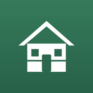

Hof-Apps
Alle Apps auf einen Blick. Öffne eine App und lege sie als Symbol auf den Startbildschirm.
Hof

Gäste-VerwaltungFrühstücksbestellungen, Bäckerei-Liste, Gästemappe, QR-Codes›Persönlich
KalorienEssen per Foto oder Barcode erfassen› WandertagebuchFür Mama – Wanderungen mit Fotos, GPS und Gipfelbuch›Zum Weitergeben
GästeseiteSo sehen es die Gäste – sie kommen über den QR-Code in ihrer Unterkunft hierher›Als App installieren
iPhone: App in Safari öffnen › Teilen › Zum Home-Bildschirm
Android: App in Chrome öffnen › ⋮ › App installieren
Android: App in Chrome öffnen › ⋮ › App installieren